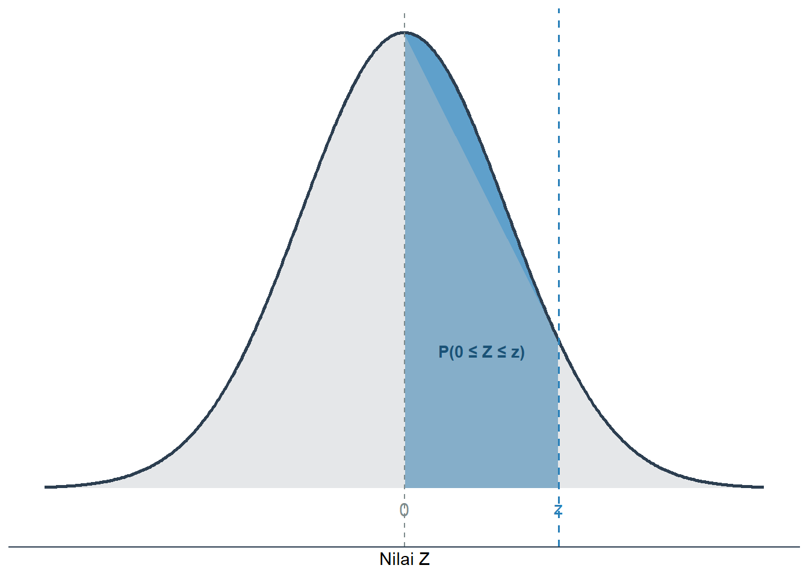
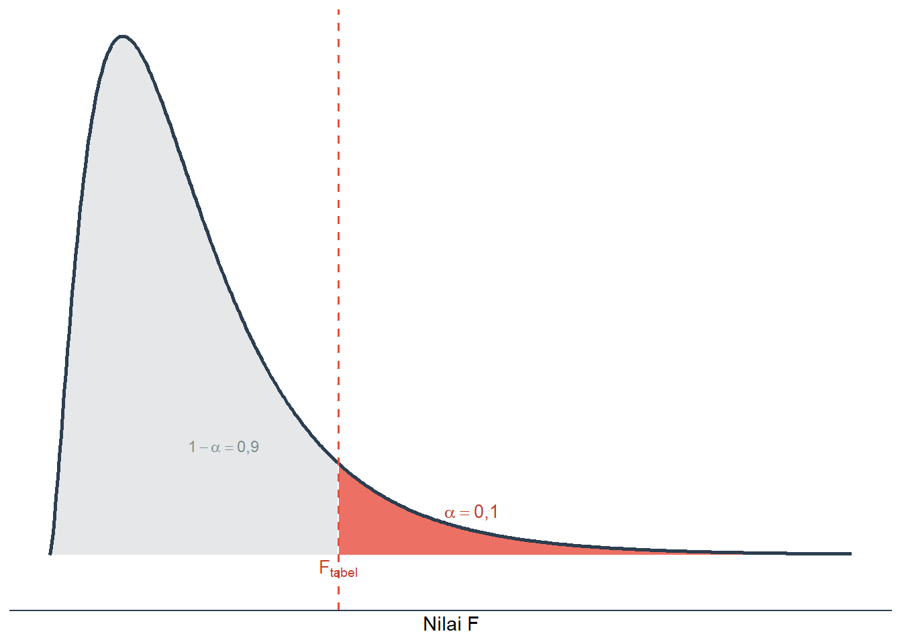
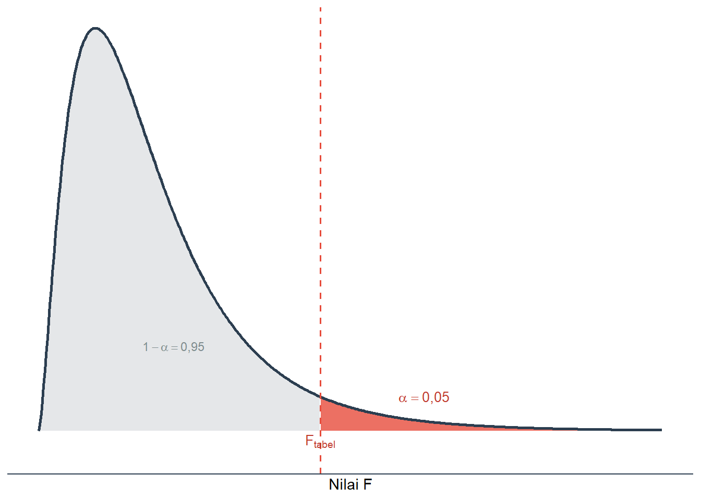

Tabel Statistik
3 Tabel Distribusi Normal Standar (Z) {.unnumbered}
Tabel berikut menyajikan luas area di bawah kurva distribusi normal standar dari \(Z = 0\) hingga nilai \(Z\) tertentu, yaitu \(P(0 \leq Z \leq z)\).

Gambar 14.1: Luas area yang dicari pada Tabel Distribusi Normal Standar: \(P(0 \leq Z \leq z)\)
| z | 0,00 | 0,01 | 0,02 | 0,03 | 0,04 | 0,05 | 0,06 | 0,07 | 0,08 | 0,09 |
|---|---|---|---|---|---|---|---|---|---|---|
| 0,0 | 0,0000 | 0,0040 | 0,0080 | 0,0120 | 0,0160 | 0,0199 | 0,0239 | 0,0279 | 0,0319 | 0,0359 |
| 0,1 | 0,0398 | 0,0438 | 0,0478 | 0,0517 | 0,0557 | 0,0596 | 0,0636 | 0,0675 | 0,0714 | 0,0753 |
| 0,2 | 0,0793 | 0,0832 | 0,0871 | 0,0910 | 0,0948 | 0,0987 | 0,1026 | 0,1064 | 0,1103 | 0,1141 |
| 0,3 | 0,1179 | 0,1217 | 0,1255 | 0,1293 | 0,1331 | 0,1368 | 0,1406 | 0,1443 | 0,1480 | 0,1517 |
| 0,4 | 0,1554 | 0,1591 | 0,1628 | 0,1664 | 0,1700 | 0,1736 | 0,1772 | 0,1808 | 0,1844 | 0,1879 |
| 0,5 | 0,1915 | 0,1950 | 0,1985 | 0,2019 | 0,2054 | 0,2088 | 0,2123 | 0,2157 | 0,2190 | 0,2224 |
| 0,6 | 0,2257 | 0,2291 | 0,2324 | 0,2357 | 0,2389 | 0,2422 | 0,2454 | 0,2486 | 0,2517 | 0,2549 |
| 0,7 | 0,2580 | 0,2611 | 0,2642 | 0,2673 | 0,2704 | 0,2734 | 0,2764 | 0,2794 | 0,2823 | 0,2852 |
| 0,8 | 0,2881 | 0,2910 | 0,2939 | 0,2967 | 0,2995 | 0,3023 | 0,3051 | 0,3078 | 0,3106 | 0,3133 |
| 0,9 | 0,3159 | 0,3186 | 0,3212 | 0,3238 | 0,3264 | 0,3289 | 0,3315 | 0,3340 | 0,3365 | 0,3389 |
| 1,0 | 0,3413 | 0,3438 | 0,3461 | 0,3485 | 0,3508 | 0,3531 | 0,3554 | 0,3577 | 0,3599 | 0,3621 |
| 1,1 | 0,3643 | 0,3665 | 0,3686 | 0,3708 | 0,3729 | 0,3749 | 0,3770 | 0,3790 | 0,3810 | 0,3830 |
| 1,2 | 0,3849 | 0,3869 | 0,3888 | 0,3907 | 0,3925 | 0,3944 | 0,3962 | 0,3980 | 0,3997 | 0,4015 |
| 1,3 | 0,4032 | 0,4049 | 0,4066 | 0,4082 | 0,4099 | 0,4115 | 0,4131 | 0,4147 | 0,4162 | 0,4177 |
| 1,4 | 0,4192 | 0,4207 | 0,4222 | 0,4236 | 0,4251 | 0,4265 | 0,4279 | 0,4292 | 0,4306 | 0,4319 |
| 1,5 | 0,4332 | 0,4345 | 0,4357 | 0,4370 | 0,4382 | 0,4394 | 0,4406 | 0,4418 | 0,4429 | 0,4441 |
| 1,6 | 0,4452 | 0,4463 | 0,4474 | 0,4484 | 0,4495 | 0,4505 | 0,4515 | 0,4525 | 0,4535 | 0,4545 |
| 1,7 | 0,4554 | 0,4564 | 0,4573 | 0,4582 | 0,4591 | 0,4599 | 0,4608 | 0,4616 | 0,4625 | 0,4633 |
| 1,8 | 0,4641 | 0,4649 | 0,4656 | 0,4664 | 0,4671 | 0,4678 | 0,4686 | 0,4693 | 0,4699 | 0,4706 |
| 1,9 | 0,4713 | 0,4719 | 0,4726 | 0,4732 | 0,4738 | 0,4744 | 0,4750 | 0,4756 | 0,4761 | 0,4767 |
| 2,0 | 0,4772 | 0,4778 | 0,4783 | 0,4788 | 0,4793 | 0,4798 | 0,4803 | 0,4808 | 0,4812 | 0,4817 |
| 2,1 | 0,4821 | 0,4826 | 0,4830 | 0,4834 | 0,4838 | 0,4842 | 0,4846 | 0,4850 | 0,4854 | 0,4857 |
| 2,2 | 0,4861 | 0,4864 | 0,4868 | 0,4871 | 0,4875 | 0,4878 | 0,4881 | 0,4884 | 0,4887 | 0,4890 |
| 2,3 | 0,4893 | 0,4896 | 0,4898 | 0,4901 | 0,4904 | 0,4906 | 0,4909 | 0,4911 | 0,4913 | 0,4916 |
| 2,4 | 0,4918 | 0,4920 | 0,4922 | 0,4925 | 0,4927 | 0,4929 | 0,4931 | 0,4932 | 0,4934 | 0,4936 |
| 2,5 | 0,4938 | 0,4940 | 0,4941 | 0,4943 | 0,4945 | 0,4946 | 0,4948 | 0,4949 | 0,4951 | 0,4952 |
| 2,6 | 0,4953 | 0,4955 | 0,4956 | 0,4957 | 0,4959 | 0,4960 | 0,4961 | 0,4962 | 0,4963 | 0,4964 |
| 2,7 | 0,4965 | 0,4966 | 0,4967 | 0,4968 | 0,4969 | 0,4970 | 0,4971 | 0,4972 | 0,4973 | 0,4974 |
| 2,8 | 0,4974 | 0,4975 | 0,4976 | 0,4977 | 0,4977 | 0,4978 | 0,4979 | 0,4979 | 0,4980 | 0,4981 |
| 2,9 | 0,4981 | 0,4982 | 0,4982 | 0,4983 | 0,4984 | 0,4984 | 0,4985 | 0,4985 | 0,4986 | 0,4986 |
| 3,0 | 0,4987 | 0,4987 | 0,4987 | 0,4988 | 0,4988 | 0,4989 | 0,4989 | 0,4989 | 0,4990 | 0,4990 |
| 3,1 | 0,4990 | 0,4991 | 0,4991 | 0,4991 | 0,4992 | 0,4992 | 0,4992 | 0,4992 | 0,4993 | 0,4993 |
| 3,2 | 0,4993 | 0,4993 | 0,4994 | 0,4994 | 0,4994 | 0,4994 | 0,4994 | 0,4995 | 0,4995 | 0,4995 |
| 3,3 | 0,4995 | 0,4995 | 0,4995 | 0,4996 | 0,4996 | 0,4996 | 0,4996 | 0,4996 | 0,4996 | 0,4997 |
| 3,4 | 0,4997 | 0,4997 | 0,4997 | 0,4997 | 0,4997 | 0,4997 | 0,4997 | 0,4997 | 0,4997 | 0,4998 |
4 Tabel Distribusi F (\(\alpha = 10\%\)) {.unnumbered}
Tabel berikut menyajikan nilai \(F_{kritis}\) pada tingkat signifikansi \(\alpha = 10\%\), yaitu nilai \(F\) yang membatasi luas area sebesar 10% di ekor kanan distribusi F, \(P(F > F_{tabel}) = 0{,}10\).

Gambar 14.2: Luas area yang dicari pada Tabel Distribusi F (\(\alpha = 10\%\)): \(P(F > F_{tabel}) = 0{,}10\)
| dfw | 1 | 2 | 3 | 4 | 5 | 6 | 7 | 8 | 9 | 10 | 11 | 12 | 13 | 14 | 15 | 16 | 17 | 18 | 19 | 20 | 21 | 22 | 23 | 24 | 25 | 26 | 27 | 28 | 29 | 30 | 40 | 60 | 120 | ∞ |
|---|---|---|---|---|---|---|---|---|---|---|---|---|---|---|---|---|---|---|---|---|---|---|---|---|---|---|---|---|---|---|---|---|---|---|
| 1 | 39,86 | 49,50 | 53,59 | 55,83 | 57,24 | 58,20 | 58,91 | 59,44 | 59,86 | 60,19 | 60,47 | 60,71 | 60,90 | 61,07 | 61,22 | 61,35 | 61,46 | 61,57 | 61,66 | 61,74 | 61,81 | 61,88 | 61,95 | 62,00 | 62,05 | 62,10 | 62,15 | 62,19 | 62,23 | 62,26 | 62,53 | 62,79 | 63,06 | 63,30 |
| 2 | 8,53 | 9,00 | 9,16 | 9,24 | 9,29 | 9,33 | 9,35 | 9,37 | 9,38 | 9,39 | 9,40 | 9,41 | 9,41 | 9,42 | 9,42 | 9,43 | 9,43 | 9,44 | 9,44 | 9,44 | 9,44 | 9,45 | 9,45 | 9,45 | 9,45 | 9,45 | 9,45 | 9,46 | 9,46 | 9,46 | 9,47 | 9,47 | 9,48 | 9,49 |
| 3 | 5,54 | 5,46 | 5,39 | 5,34 | 5,31 | 5,28 | 5,27 | 5,25 | 5,24 | 5,23 | 5,22 | 5,22 | 5,21 | 5,20 | 5,20 | 5,20 | 5,19 | 5,19 | 5,19 | 5,18 | 5,18 | 5,18 | 5,18 | 5,18 | 5,17 | 5,17 | 5,17 | 5,17 | 5,17 | 5,17 | 5,16 | 5,15 | 5,14 | 5,13 |
| 4 | 4,54 | 4,32 | 4,19 | 4,11 | 4,05 | 4,01 | 3,98 | 3,95 | 3,94 | 3,92 | 3,91 | 3,90 | 3,89 | 3,88 | 3,87 | 3,86 | 3,86 | 3,85 | 3,85 | 3,84 | 3,84 | 3,84 | 3,83 | 3,83 | 3,83 | 3,83 | 3,82 | 3,82 | 3,82 | 3,82 | 3,80 | 3,79 | 3,78 | 3,76 |
| 5 | 4,06 | 3,78 | 3,62 | 3,52 | 3,45 | 3,40 | 3,37 | 3,34 | 3,32 | 3,30 | 3,28 | 3,27 | 3,26 | 3,25 | 3,24 | 3,23 | 3,22 | 3,22 | 3,21 | 3,21 | 3,20 | 3,20 | 3,19 | 3,19 | 3,19 | 3,18 | 3,18 | 3,18 | 3,18 | 3,17 | 3,16 | 3,14 | 3,12 | 3,11 |
| 6 | 3,78 | 3,46 | 3,29 | 3,18 | 3,11 | 3,05 | 3,01 | 2,98 | 2,96 | 2,94 | 2,92 | 2,90 | 2,89 | 2,88 | 2,87 | 2,86 | 2,85 | 2,85 | 2,84 | 2,84 | 2,83 | 2,83 | 2,82 | 2,82 | 2,81 | 2,81 | 2,81 | 2,81 | 2,80 | 2,80 | 2,78 | 2,76 | 2,74 | 2,72 |
| 7 | 3,59 | 3,26 | 3,07 | 2,96 | 2,88 | 2,83 | 2,78 | 2,75 | 2,72 | 2,70 | 2,68 | 2,67 | 2,65 | 2,64 | 2,63 | 2,62 | 2,61 | 2,61 | 2,60 | 2,59 | 2,59 | 2,58 | 2,58 | 2,58 | 2,57 | 2,57 | 2,56 | 2,56 | 2,56 | 2,56 | 2,54 | 2,51 | 2,49 | 2,47 |
| 8 | 3,46 | 3,11 | 2,92 | 2,81 | 2,73 | 2,67 | 2,62 | 2,59 | 2,56 | 2,54 | 2,52 | 2,50 | 2,49 | 2,48 | 2,46 | 2,45 | 2,45 | 2,44 | 2,43 | 2,42 | 2,42 | 2,41 | 2,41 | 2,40 | 2,40 | 2,40 | 2,39 | 2,39 | 2,39 | 2,38 | 2,36 | 2,34 | 2,32 | 2,30 |
| 9 | 3,36 | 3,01 | 2,81 | 2,69 | 2,61 | 2,55 | 2,51 | 2,47 | 2,44 | 2,42 | 2,40 | 2,38 | 2,36 | 2,35 | 2,34 | 2,33 | 2,32 | 2,31 | 2,30 | 2,30 | 2,29 | 2,29 | 2,28 | 2,28 | 2,27 | 2,27 | 2,26 | 2,26 | 2,26 | 2,25 | 2,23 | 2,21 | 2,18 | 2,16 |
| 10 | 3,29 | 2,92 | 2,73 | 2,61 | 2,52 | 2,46 | 2,41 | 2,38 | 2,35 | 2,32 | 2,30 | 2,28 | 2,27 | 2,26 | 2,24 | 2,23 | 2,22 | 2,22 | 2,21 | 2,20 | 2,19 | 2,19 | 2,18 | 2,18 | 2,17 | 2,17 | 2,17 | 2,16 | 2,16 | 2,16 | 2,13 | 2,11 | 2,08 | 2,06 |
| 11 | 3,23 | 2,86 | 2,66 | 2,54 | 2,45 | 2,39 | 2,34 | 2,30 | 2,27 | 2,25 | 2,23 | 2,21 | 2,19 | 2,18 | 2,17 | 2,16 | 2,15 | 2,14 | 2,13 | 2,12 | 2,12 | 2,11 | 2,11 | 2,10 | 2,10 | 2,09 | 2,09 | 2,08 | 2,08 | 2,08 | 2,05 | 2,03 | 2,00 | 1,98 |
| 12 | 3,18 | 2,81 | 2,61 | 2,48 | 2,39 | 2,33 | 2,28 | 2,24 | 2,21 | 2,19 | 2,17 | 2,15 | 2,13 | 2,12 | 2,10 | 2,09 | 2,08 | 2,08 | 2,07 | 2,06 | 2,05 | 2,05 | 2,04 | 2,04 | 2,03 | 2,03 | 2,02 | 2,02 | 2,01 | 2,01 | 1,99 | 1,96 | 1,93 | 1,91 |
| 13 | 3,14 | 2,76 | 2,56 | 2,43 | 2,35 | 2,28 | 2,23 | 2,20 | 2,16 | 2,14 | 2,12 | 2,10 | 2,08 | 2,07 | 2,05 | 2,04 | 2,03 | 2,02 | 2,01 | 2,01 | 2,00 | 1,99 | 1,99 | 1,98 | 1,98 | 1,97 | 1,97 | 1,96 | 1,96 | 1,96 | 1,93 | 1,90 | 1,88 | 1,85 |
| 14 | 3,10 | 2,73 | 2,52 | 2,39 | 2,31 | 2,24 | 2,19 | 2,15 | 2,12 | 2,10 | 2,07 | 2,05 | 2,04 | 2,02 | 2,01 | 2,00 | 1,99 | 1,98 | 1,97 | 1,96 | 1,96 | 1,95 | 1,94 | 1,94 | 1,93 | 1,93 | 1,92 | 1,92 | 1,92 | 1,91 | 1,89 | 1,86 | 1,83 | 1,80 |
| 15 | 3,07 | 2,70 | 2,49 | 2,36 | 2,27 | 2,21 | 2,16 | 2,12 | 2,09 | 2,06 | 2,04 | 2,02 | 2,00 | 1,99 | 1,97 | 1,96 | 1,95 | 1,94 | 1,93 | 1,92 | 1,92 | 1,91 | 1,90 | 1,90 | 1,89 | 1,89 | 1,88 | 1,88 | 1,88 | 1,87 | 1,85 | 1,82 | 1,79 | 1,76 |
| 16 | 3,05 | 2,67 | 2,46 | 2,33 | 2,24 | 2,18 | 2,13 | 2,09 | 2,06 | 2,03 | 2,01 | 1,99 | 1,97 | 1,95 | 1,94 | 1,93 | 1,92 | 1,91 | 1,90 | 1,89 | 1,88 | 1,88 | 1,87 | 1,87 | 1,86 | 1,86 | 1,85 | 1,85 | 1,84 | 1,84 | 1,81 | 1,78 | 1,75 | 1,72 |
| 17 | 3,03 | 2,64 | 2,44 | 2,31 | 2,22 | 2,15 | 2,10 | 2,06 | 2,03 | 2,00 | 1,98 | 1,96 | 1,94 | 1,93 | 1,91 | 1,90 | 1,89 | 1,88 | 1,87 | 1,86 | 1,86 | 1,85 | 1,84 | 1,84 | 1,83 | 1,83 | 1,82 | 1,82 | 1,81 | 1,81 | 1,78 | 1,75 | 1,72 | 1,69 |
| 18 | 3,01 | 2,62 | 2,42 | 2,29 | 2,20 | 2,13 | 2,08 | 2,04 | 2,00 | 1,98 | 1,95 | 1,93 | 1,92 | 1,90 | 1,89 | 1,87 | 1,86 | 1,85 | 1,84 | 1,84 | 1,83 | 1,82 | 1,82 | 1,81 | 1,80 | 1,80 | 1,80 | 1,79 | 1,79 | 1,78 | 1,75 | 1,72 | 1,69 | 1,66 |
| 19 | 2,99 | 2,61 | 2,40 | 2,27 | 2,18 | 2,11 | 2,06 | 2,02 | 1,98 | 1,96 | 1,93 | 1,91 | 1,89 | 1,88 | 1,86 | 1,85 | 1,84 | 1,83 | 1,82 | 1,81 | 1,81 | 1,80 | 1,79 | 1,79 | 1,78 | 1,78 | 1,77 | 1,77 | 1,76 | 1,76 | 1,73 | 1,70 | 1,67 | 1,64 |
| 20 | 2,97 | 2,59 | 2,38 | 2,25 | 2,16 | 2,09 | 2,04 | 2,00 | 1,96 | 1,94 | 1,91 | 1,89 | 1,87 | 1,86 | 1,84 | 1,83 | 1,82 | 1,81 | 1,80 | 1,79 | 1,79 | 1,78 | 1,77 | 1,77 | 1,76 | 1,76 | 1,75 | 1,75 | 1,74 | 1,74 | 1,71 | 1,68 | 1,64 | 1,61 |
| 21 | 2,96 | 2,57 | 2,36 | 2,23 | 2,14 | 2,08 | 2,02 | 1,98 | 1,95 | 1,92 | 1,90 | 1,87 | 1,86 | 1,84 | 1,83 | 1,81 | 1,80 | 1,79 | 1,78 | 1,78 | 1,77 | 1,76 | 1,75 | 1,75 | 1,74 | 1,74 | 1,73 | 1,73 | 1,72 | 1,72 | 1,69 | 1,66 | 1,62 | 1,59 |
| 22 | 2,95 | 2,56 | 2,35 | 2,22 | 2,13 | 2,06 | 2,01 | 1,97 | 1,93 | 1,90 | 1,88 | 1,86 | 1,84 | 1,83 | 1,81 | 1,80 | 1,79 | 1,78 | 1,77 | 1,76 | 1,75 | 1,74 | 1,74 | 1,73 | 1,73 | 1,72 | 1,72 | 1,71 | 1,71 | 1,70 | 1,67 | 1,64 | 1,60 | 1,57 |
| 23 | 2,94 | 2,55 | 2,34 | 2,21 | 2,11 | 2,05 | 1,99 | 1,95 | 1,92 | 1,89 | 1,87 | 1,84 | 1,83 | 1,81 | 1,80 | 1,78 | 1,77 | 1,76 | 1,75 | 1,74 | 1,74 | 1,73 | 1,72 | 1,72 | 1,71 | 1,70 | 1,70 | 1,69 | 1,69 | 1,69 | 1,66 | 1,62 | 1,59 | 1,55 |
| 24 | 2,93 | 2,54 | 2,33 | 2,19 | 2,10 | 2,04 | 1,98 | 1,94 | 1,91 | 1,88 | 1,85 | 1,83 | 1,81 | 1,80 | 1,78 | 1,77 | 1,76 | 1,75 | 1,74 | 1,73 | 1,72 | 1,71 | 1,71 | 1,70 | 1,70 | 1,69 | 1,69 | 1,68 | 1,68 | 1,67 | 1,64 | 1,61 | 1,57 | 1,54 |
| 25 | 2,92 | 2,53 | 2,32 | 2,18 | 2,09 | 2,02 | 1,97 | 1,93 | 1,89 | 1,87 | 1,84 | 1,82 | 1,80 | 1,79 | 1,77 | 1,76 | 1,75 | 1,74 | 1,73 | 1,72 | 1,71 | 1,70 | 1,70 | 1,69 | 1,68 | 1,68 | 1,67 | 1,67 | 1,66 | 1,66 | 1,63 | 1,59 | 1,56 | 1,52 |
| 26 | 2,91 | 2,52 | 2,31 | 2,17 | 2,08 | 2,01 | 1,96 | 1,92 | 1,88 | 1,86 | 1,83 | 1,81 | 1,79 | 1,77 | 1,76 | 1,75 | 1,73 | 1,72 | 1,71 | 1,71 | 1,70 | 1,69 | 1,68 | 1,68 | 1,67 | 1,67 | 1,66 | 1,66 | 1,65 | 1,65 | 1,61 | 1,58 | 1,54 | 1,51 |
| 27 | 2,90 | 2,51 | 2,30 | 2,17 | 2,07 | 2,00 | 1,95 | 1,91 | 1,87 | 1,85 | 1,82 | 1,80 | 1,78 | 1,76 | 1,75 | 1,74 | 1,72 | 1,71 | 1,70 | 1,70 | 1,69 | 1,68 | 1,67 | 1,67 | 1,66 | 1,65 | 1,65 | 1,64 | 1,64 | 1,64 | 1,60 | 1,57 | 1,53 | 1,50 |
| 28 | 2,89 | 2,50 | 2,29 | 2,16 | 2,06 | 2,00 | 1,94 | 1,90 | 1,87 | 1,84 | 1,81 | 1,79 | 1,77 | 1,75 | 1,74 | 1,73 | 1,71 | 1,70 | 1,69 | 1,69 | 1,68 | 1,67 | 1,66 | 1,66 | 1,65 | 1,64 | 1,64 | 1,63 | 1,63 | 1,63 | 1,59 | 1,56 | 1,52 | 1,48 |
| 29 | 2,89 | 2,50 | 2,28 | 2,15 | 2,06 | 1,99 | 1,93 | 1,89 | 1,86 | 1,83 | 1,80 | 1,78 | 1,76 | 1,75 | 1,73 | 1,72 | 1,71 | 1,69 | 1,68 | 1,68 | 1,67 | 1,66 | 1,65 | 1,65 | 1,64 | 1,63 | 1,63 | 1,62 | 1,62 | 1,62 | 1,58 | 1,55 | 1,51 | 1,47 |
| 30 | 2,88 | 2,49 | 2,28 | 2,14 | 2,05 | 1,98 | 1,93 | 1,88 | 1,85 | 1,82 | 1,79 | 1,77 | 1,75 | 1,74 | 1,72 | 1,71 | 1,70 | 1,69 | 1,68 | 1,67 | 1,66 | 1,65 | 1,64 | 1,64 | 1,63 | 1,63 | 1,62 | 1,62 | 1,61 | 1,61 | 1,57 | 1,54 | 1,50 | 1,46 |
| 40 | 2,84 | 2,44 | 2,23 | 2,09 | 2,00 | 1,93 | 1,87 | 1,83 | 1,79 | 1,76 | 1,74 | 1,71 | 1,70 | 1,68 | 1,66 | 1,65 | 1,64 | 1,62 | 1,61 | 1,61 | 1,60 | 1,59 | 1,58 | 1,57 | 1,57 | 1,56 | 1,56 | 1,55 | 1,55 | 1,54 | 1,51 | 1,47 | 1,42 | 1,38 |
| 60 | 2,79 | 2,39 | 2,18 | 2,04 | 1,95 | 1,87 | 1,82 | 1,77 | 1,74 | 1,71 | 1,68 | 1,66 | 1,64 | 1,62 | 1,60 | 1,59 | 1,58 | 1,56 | 1,55 | 1,54 | 1,53 | 1,53 | 1,52 | 1,51 | 1,50 | 1,50 | 1,49 | 1,49 | 1,48 | 1,48 | 1,44 | 1,40 | 1,35 | 1,30 |
| 120 | 2,75 | 2,35 | 2,13 | 1,99 | 1,90 | 1,82 | 1,77 | 1,72 | 1,68 | 1,65 | 1,63 | 1,60 | 1,58 | 1,56 | 1,55 | 1,53 | 1,52 | 1,50 | 1,49 | 1,48 | 1,47 | 1,46 | 1,46 | 1,45 | 1,44 | 1,43 | 1,43 | 1,42 | 1,41 | 1,41 | 1,37 | 1,32 | 1,26 | 1,20 |
| ∞ | 2,71 | 2,31 | 2,09 | 1,95 | 1,85 | 1,78 | 1,72 | 1,68 | 1,64 | 1,61 | 1,58 | 1,55 | 1,53 | 1,51 | 1,49 | 1,48 | 1,46 | 1,45 | 1,44 | 1,43 | 1,42 | 1,41 | 1,40 | 1,39 | 1,38 | 1,38 | 1,37 | 1,36 | 1,36 | 1,35 | 1,30 | 1,25 | 1,18 | 1,08 |
5 Tabel Distribusi F (\(\alpha = 5\%\)) {.unnumbered}
Tabel berikut menyajikan nilai \(F_{kritis}\) pada tingkat signifikansi \(\alpha = 5\%\), yaitu nilai \(F\) yang membatasi luas area sebesar 5% di ekor kanan distribusi F, \(P(F > F_{tabel}) = 0{,}05\).

Gambar 14.3: Luas area yang dicari pada Tabel Distribusi F (\(\alpha = 5\%\)): \(P(F > F_{tabel}) = 0{,}05\)
| dfw | 1 | 2 | 3 | 4 | 5 | 6 | 7 | 8 | 9 | 10 | 11 | 12 | 13 | 14 | 15 | 16 | 17 | 18 | 19 | 20 | 21 | 22 | 23 | 24 | 25 | 26 | 27 | 28 | 29 | 30 | 40 | 60 | 120 | ∞ |
|---|---|---|---|---|---|---|---|---|---|---|---|---|---|---|---|---|---|---|---|---|---|---|---|---|---|---|---|---|---|---|---|---|---|---|
| 1 | 161,45 | 199,50 | 215,71 | 224,58 | 230,16 | 233,99 | 236,77 | 238,88 | 240,54 | 241,88 | 242,98 | 243,91 | 244,69 | 245,36 | 245,95 | 246,46 | 246,92 | 247,32 | 247,69 | 248,01 | 248,31 | 248,58 | 248,83 | 249,05 | 249,26 | 249,45 | 249,63 | 249,80 | 249,95 | 250,10 | 251,14 | 252,20 | 253,25 | 254,19 |
| 2 | 18,51 | 19,00 | 19,16 | 19,25 | 19,30 | 19,33 | 19,35 | 19,37 | 19,38 | 19,40 | 19,40 | 19,41 | 19,42 | 19,42 | 19,43 | 19,43 | 19,44 | 19,44 | 19,44 | 19,45 | 19,45 | 19,45 | 19,45 | 19,45 | 19,46 | 19,46 | 19,46 | 19,46 | 19,46 | 19,46 | 19,47 | 19,48 | 19,49 | 19,49 |
| 3 | 10,13 | 9,55 | 9,28 | 9,12 | 9,01 | 8,94 | 8,89 | 8,85 | 8,81 | 8,79 | 8,76 | 8,74 | 8,73 | 8,71 | 8,70 | 8,69 | 8,68 | 8,67 | 8,67 | 8,66 | 8,65 | 8,65 | 8,64 | 8,64 | 8,63 | 8,63 | 8,63 | 8,62 | 8,62 | 8,62 | 8,59 | 8,57 | 8,55 | 8,53 |
| 4 | 7,71 | 6,94 | 6,59 | 6,39 | 6,26 | 6,16 | 6,09 | 6,04 | 6,00 | 5,96 | 5,94 | 5,91 | 5,89 | 5,87 | 5,86 | 5,84 | 5,83 | 5,82 | 5,81 | 5,80 | 5,79 | 5,79 | 5,78 | 5,77 | 5,77 | 5,76 | 5,76 | 5,75 | 5,75 | 5,75 | 5,72 | 5,69 | 5,66 | 5,63 |
| 5 | 6,61 | 5,79 | 5,41 | 5,19 | 5,05 | 4,95 | 4,88 | 4,82 | 4,77 | 4,74 | 4,70 | 4,68 | 4,66 | 4,64 | 4,62 | 4,60 | 4,59 | 4,58 | 4,57 | 4,56 | 4,55 | 4,54 | 4,53 | 4,53 | 4,52 | 4,52 | 4,51 | 4,50 | 4,50 | 4,50 | 4,46 | 4,43 | 4,40 | 4,37 |
| 6 | 5,99 | 5,14 | 4,76 | 4,53 | 4,39 | 4,28 | 4,21 | 4,15 | 4,10 | 4,06 | 4,03 | 4,00 | 3,98 | 3,96 | 3,94 | 3,92 | 3,91 | 3,90 | 3,88 | 3,87 | 3,86 | 3,86 | 3,85 | 3,84 | 3,83 | 3,83 | 3,82 | 3,82 | 3,81 | 3,81 | 3,77 | 3,74 | 3,70 | 3,67 |
| 7 | 5,59 | 4,74 | 4,35 | 4,12 | 3,97 | 3,87 | 3,79 | 3,73 | 3,68 | 3,64 | 3,60 | 3,57 | 3,55 | 3,53 | 3,51 | 3,49 | 3,48 | 3,47 | 3,46 | 3,44 | 3,43 | 3,43 | 3,42 | 3,41 | 3,40 | 3,40 | 3,39 | 3,39 | 3,38 | 3,38 | 3,34 | 3,30 | 3,27 | 3,23 |
| 8 | 5,32 | 4,46 | 4,07 | 3,84 | 3,69 | 3,58 | 3,50 | 3,44 | 3,39 | 3,35 | 3,31 | 3,28 | 3,26 | 3,24 | 3,22 | 3,20 | 3,19 | 3,17 | 3,16 | 3,15 | 3,14 | 3,13 | 3,12 | 3,12 | 3,11 | 3,10 | 3,10 | 3,09 | 3,08 | 3,08 | 3,04 | 3,01 | 2,97 | 2,93 |
| 9 | 5,12 | 4,26 | 3,86 | 3,63 | 3,48 | 3,37 | 3,29 | 3,23 | 3,18 | 3,14 | 3,10 | 3,07 | 3,05 | 3,03 | 3,01 | 2,99 | 2,97 | 2,96 | 2,95 | 2,94 | 2,93 | 2,92 | 2,91 | 2,90 | 2,89 | 2,89 | 2,88 | 2,87 | 2,87 | 2,86 | 2,83 | 2,79 | 2,75 | 2,71 |
| 10 | 4,96 | 4,10 | 3,71 | 3,48 | 3,33 | 3,22 | 3,14 | 3,07 | 3,02 | 2,98 | 2,94 | 2,91 | 2,89 | 2,86 | 2,85 | 2,83 | 2,81 | 2,80 | 2,79 | 2,77 | 2,76 | 2,75 | 2,75 | 2,74 | 2,73 | 2,72 | 2,72 | 2,71 | 2,70 | 2,70 | 2,66 | 2,62 | 2,58 | 2,54 |
| 11 | 4,84 | 3,98 | 3,59 | 3,36 | 3,20 | 3,09 | 3,01 | 2,95 | 2,90 | 2,85 | 2,82 | 2,79 | 2,76 | 2,74 | 2,72 | 2,70 | 2,69 | 2,67 | 2,66 | 2,65 | 2,64 | 2,63 | 2,62 | 2,61 | 2,60 | 2,59 | 2,59 | 2,58 | 2,58 | 2,57 | 2,53 | 2,49 | 2,45 | 2,41 |
| 12 | 4,75 | 3,89 | 3,49 | 3,26 | 3,11 | 3,00 | 2,91 | 2,85 | 2,80 | 2,75 | 2,72 | 2,69 | 2,66 | 2,64 | 2,62 | 2,60 | 2,58 | 2,57 | 2,56 | 2,54 | 2,53 | 2,52 | 2,51 | 2,51 | 2,50 | 2,49 | 2,48 | 2,48 | 2,47 | 2,47 | 2,43 | 2,38 | 2,34 | 2,30 |
| 13 | 4,67 | 3,81 | 3,41 | 3,18 | 3,03 | 2,92 | 2,83 | 2,77 | 2,71 | 2,67 | 2,63 | 2,60 | 2,58 | 2,55 | 2,53 | 2,51 | 2,50 | 2,48 | 2,47 | 2,46 | 2,45 | 2,44 | 2,43 | 2,42 | 2,41 | 2,41 | 2,40 | 2,39 | 2,39 | 2,38 | 2,34 | 2,30 | 2,25 | 2,21 |
| 14 | 4,60 | 3,74 | 3,34 | 3,11 | 2,96 | 2,85 | 2,76 | 2,70 | 2,65 | 2,60 | 2,57 | 2,53 | 2,51 | 2,48 | 2,46 | 2,44 | 2,43 | 2,41 | 2,40 | 2,39 | 2,38 | 2,37 | 2,36 | 2,35 | 2,34 | 2,33 | 2,33 | 2,32 | 2,31 | 2,31 | 2,27 | 2,22 | 2,18 | 2,14 |
| 15 | 4,54 | 3,68 | 3,29 | 3,06 | 2,90 | 2,79 | 2,71 | 2,64 | 2,59 | 2,54 | 2,51 | 2,48 | 2,45 | 2,42 | 2,40 | 2,38 | 2,37 | 2,35 | 2,34 | 2,33 | 2,32 | 2,31 | 2,30 | 2,29 | 2,28 | 2,27 | 2,27 | 2,26 | 2,25 | 2,25 | 2,20 | 2,16 | 2,11 | 2,07 |
| 16 | 4,49 | 3,63 | 3,24 | 3,01 | 2,85 | 2,74 | 2,66 | 2,59 | 2,54 | 2,49 | 2,46 | 2,42 | 2,40 | 2,37 | 2,35 | 2,33 | 2,32 | 2,30 | 2,29 | 2,28 | 2,26 | 2,25 | 2,24 | 2,24 | 2,23 | 2,22 | 2,21 | 2,21 | 2,20 | 2,19 | 2,15 | 2,11 | 2,06 | 2,02 |
| 17 | 4,45 | 3,59 | 3,20 | 2,96 | 2,81 | 2,70 | 2,61 | 2,55 | 2,49 | 2,45 | 2,41 | 2,38 | 2,35 | 2,33 | 2,31 | 2,29 | 2,27 | 2,26 | 2,24 | 2,23 | 2,22 | 2,21 | 2,20 | 2,19 | 2,18 | 2,17 | 2,17 | 2,16 | 2,15 | 2,15 | 2,10 | 2,06 | 2,01 | 1,97 |
| 18 | 4,41 | 3,55 | 3,16 | 2,93 | 2,77 | 2,66 | 2,58 | 2,51 | 2,46 | 2,41 | 2,37 | 2,34 | 2,31 | 2,29 | 2,27 | 2,25 | 2,23 | 2,22 | 2,20 | 2,19 | 2,18 | 2,17 | 2,16 | 2,15 | 2,14 | 2,13 | 2,13 | 2,12 | 2,11 | 2,11 | 2,06 | 2,02 | 1,97 | 1,92 |
| 19 | 4,38 | 3,52 | 3,13 | 2,90 | 2,74 | 2,63 | 2,54 | 2,48 | 2,42 | 2,38 | 2,34 | 2,31 | 2,28 | 2,26 | 2,23 | 2,21 | 2,20 | 2,18 | 2,17 | 2,16 | 2,14 | 2,13 | 2,12 | 2,11 | 2,11 | 2,10 | 2,09 | 2,08 | 2,08 | 2,07 | 2,03 | 1,98 | 1,93 | 1,88 |
| 20 | 4,35 | 3,49 | 3,10 | 2,87 | 2,71 | 2,60 | 2,51 | 2,45 | 2,39 | 2,35 | 2,31 | 2,28 | 2,25 | 2,22 | 2,20 | 2,18 | 2,17 | 2,15 | 2,14 | 2,12 | 2,11 | 2,10 | 2,09 | 2,08 | 2,07 | 2,07 | 2,06 | 2,05 | 2,05 | 2,04 | 1,99 | 1,95 | 1,90 | 1,85 |
| 21 | 4,32 | 3,47 | 3,07 | 2,84 | 2,68 | 2,57 | 2,49 | 2,42 | 2,37 | 2,32 | 2,28 | 2,25 | 2,22 | 2,20 | 2,18 | 2,16 | 2,14 | 2,12 | 2,11 | 2,10 | 2,08 | 2,07 | 2,06 | 2,05 | 2,05 | 2,04 | 2,03 | 2,02 | 2,02 | 2,01 | 1,96 | 1,92 | 1,87 | 1,82 |
| 22 | 4,30 | 3,44 | 3,05 | 2,82 | 2,66 | 2,55 | 2,46 | 2,40 | 2,34 | 2,30 | 2,26 | 2,23 | 2,20 | 2,17 | 2,15 | 2,13 | 2,11 | 2,10 | 2,08 | 2,07 | 2,06 | 2,05 | 2,04 | 2,03 | 2,02 | 2,01 | 2,00 | 2,00 | 1,99 | 1,98 | 1,94 | 1,89 | 1,84 | 1,79 |
| 23 | 4,28 | 3,42 | 3,03 | 2,80 | 2,64 | 2,53 | 2,44 | 2,37 | 2,32 | 2,27 | 2,24 | 2,20 | 2,18 | 2,15 | 2,13 | 2,11 | 2,09 | 2,08 | 2,06 | 2,05 | 2,04 | 2,02 | 2,01 | 2,01 | 2,00 | 1,99 | 1,98 | 1,97 | 1,97 | 1,96 | 1,91 | 1,86 | 1,81 | 1,76 |
| 24 | 4,26 | 3,40 | 3,01 | 2,78 | 2,62 | 2,51 | 2,42 | 2,36 | 2,30 | 2,25 | 2,22 | 2,18 | 2,15 | 2,13 | 2,11 | 2,09 | 2,07 | 2,05 | 2,04 | 2,03 | 2,01 | 2,00 | 1,99 | 1,98 | 1,97 | 1,97 | 1,96 | 1,95 | 1,95 | 1,94 | 1,89 | 1,84 | 1,79 | 1,74 |
| 25 | 4,24 | 3,39 | 2,99 | 2,76 | 2,60 | 2,49 | 2,40 | 2,34 | 2,28 | 2,24 | 2,20 | 2,16 | 2,14 | 2,11 | 2,09 | 2,07 | 2,05 | 2,04 | 2,02 | 2,01 | 2,00 | 1,98 | 1,97 | 1,96 | 1,96 | 1,95 | 1,94 | 1,93 | 1,93 | 1,92 | 1,87 | 1,82 | 1,77 | 1,72 |
| 26 | 4,23 | 3,37 | 2,98 | 2,74 | 2,59 | 2,47 | 2,39 | 2,32 | 2,27 | 2,22 | 2,18 | 2,15 | 2,12 | 2,09 | 2,07 | 2,05 | 2,03 | 2,02 | 2,00 | 1,99 | 1,98 | 1,97 | 1,96 | 1,95 | 1,94 | 1,93 | 1,92 | 1,91 | 1,91 | 1,90 | 1,85 | 1,80 | 1,75 | 1,70 |
| 27 | 4,21 | 3,35 | 2,96 | 2,73 | 2,57 | 2,46 | 2,37 | 2,31 | 2,25 | 2,20 | 2,17 | 2,13 | 2,10 | 2,08 | 2,06 | 2,04 | 2,02 | 2,00 | 1,99 | 1,97 | 1,96 | 1,95 | 1,94 | 1,93 | 1,92 | 1,91 | 1,90 | 1,90 | 1,89 | 1,88 | 1,84 | 1,79 | 1,73 | 1,68 |
| 28 | 4,20 | 3,34 | 2,95 | 2,71 | 2,56 | 2,45 | 2,36 | 2,29 | 2,24 | 2,19 | 2,15 | 2,12 | 2,09 | 2,06 | 2,04 | 2,02 | 2,00 | 1,99 | 1,97 | 1,96 | 1,95 | 1,93 | 1,92 | 1,91 | 1,91 | 1,90 | 1,89 | 1,88 | 1,88 | 1,87 | 1,82 | 1,77 | 1,71 | 1,66 |
| 29 | 4,18 | 3,33 | 2,93 | 2,70 | 2,55 | 2,43 | 2,35 | 2,28 | 2,22 | 2,18 | 2,14 | 2,10 | 2,08 | 2,05 | 2,03 | 2,01 | 1,99 | 1,97 | 1,96 | 1,94 | 1,93 | 1,92 | 1,91 | 1,90 | 1,89 | 1,88 | 1,88 | 1,87 | 1,86 | 1,85 | 1,81 | 1,75 | 1,70 | 1,65 |
| 30 | 4,17 | 3,32 | 2,92 | 2,69 | 2,53 | 2,42 | 2,33 | 2,27 | 2,21 | 2,16 | 2,13 | 2,09 | 2,06 | 2,04 | 2,01 | 1,99 | 1,98 | 1,96 | 1,95 | 1,93 | 1,92 | 1,91 | 1,90 | 1,89 | 1,88 | 1,87 | 1,86 | 1,85 | 1,85 | 1,84 | 1,79 | 1,74 | 1,68 | 1,63 |
| 40 | 4,08 | 3,23 | 2,84 | 2,61 | 2,45 | 2,34 | 2,25 | 2,18 | 2,12 | 2,08 | 2,04 | 2,00 | 1,97 | 1,95 | 1,92 | 1,90 | 1,89 | 1,87 | 1,85 | 1,84 | 1,83 | 1,81 | 1,80 | 1,79 | 1,78 | 1,77 | 1,77 | 1,76 | 1,75 | 1,74 | 1,69 | 1,64 | 1,58 | 1,52 |
| 60 | 4,00 | 3,15 | 2,76 | 2,53 | 2,37 | 2,25 | 2,17 | 2,10 | 2,04 | 1,99 | 1,95 | 1,92 | 1,89 | 1,86 | 1,84 | 1,82 | 1,80 | 1,78 | 1,76 | 1,75 | 1,73 | 1,72 | 1,71 | 1,70 | 1,69 | 1,68 | 1,67 | 1,66 | 1,66 | 1,65 | 1,59 | 1,53 | 1,47 | 1,40 |
| 120 | 3,92 | 3,07 | 2,68 | 2,45 | 2,29 | 2,18 | 2,09 | 2,02 | 1,96 | 1,91 | 1,87 | 1,83 | 1,80 | 1,78 | 1,75 | 1,73 | 1,71 | 1,69 | 1,67 | 1,66 | 1,64 | 1,63 | 1,62 | 1,61 | 1,60 | 1,59 | 1,58 | 1,57 | 1,56 | 1,55 | 1,50 | 1,43 | 1,35 | 1,27 |
| ∞ | 3,85 | 3,00 | 2,61 | 2,38 | 2,22 | 2,11 | 2,02 | 1,95 | 1,89 | 1,84 | 1,80 | 1,76 | 1,73 | 1,70 | 1,68 | 1,65 | 1,63 | 1,61 | 1,60 | 1,58 | 1,57 | 1,55 | 1,54 | 1,53 | 1,52 | 1,51 | 1,50 | 1,49 | 1,48 | 1,47 | 1,41 | 1,33 | 1,24 | 1,11 |